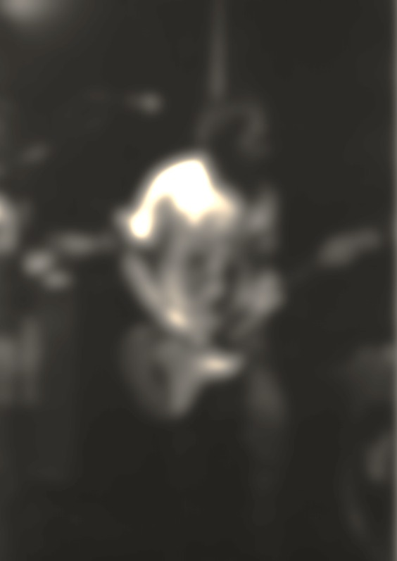
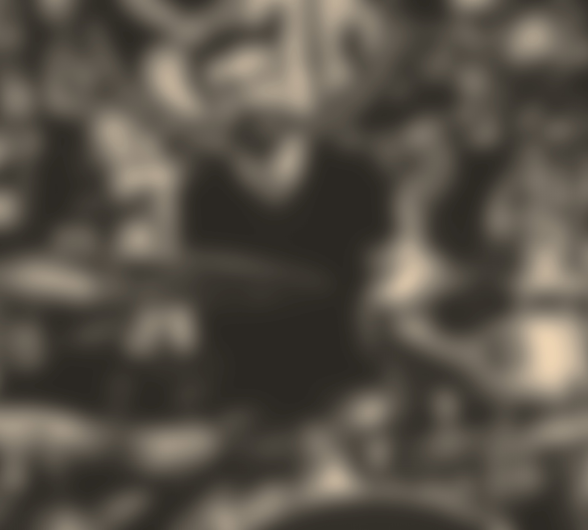
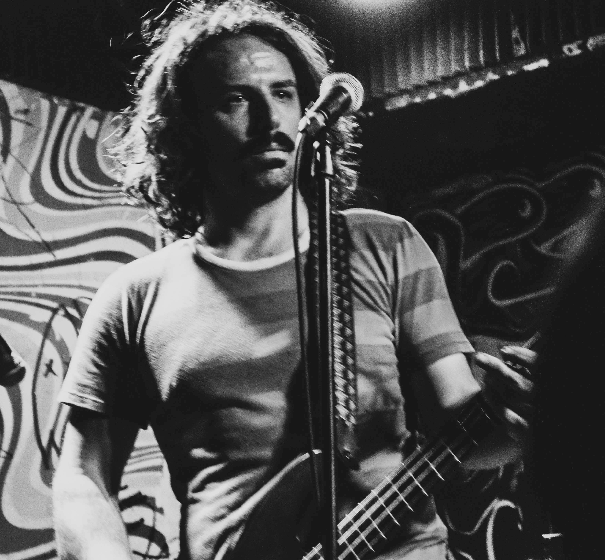

8 / 11 | To Be Determined
Sipul is a three-piece alternative/grunge band from Rochester, NY.
James "Spaz" Spaziani (guitar and vocals) and Al Bellanca (bass) have been playing in bands together since 2013. The two met Douglas Folen while searching for a new drummer through a Craigslist ad in 2024. After a successful tryout, he would join the band on drums, and the three almost immediately started working on an album.
The album in question, "In The Still," was an entirely self-produced project. Recorded in Al's basement, the band found themselves with the freedom and latitude to create an album that they were all proud of. Allowing them the creative liberty to include found sounds, and to include cameos from other musicians (Rob Varon on lead guitar for, "Later," Rowan Lynch on saxophone for, "Hibachi Ball," and bass clarinet for, "Ford Nova," and, "Hibachi Ball," and Delow Brown on backing vocals for, "Eating a Reuben Alone in a DMV Bathroom"). Spaz then mixed and mastered the album entirely himself to ensure it matched the band's vision as closely as possible.
The album's lyrical content stems from an urban legend about a man who lived out a decade's worth of life only to have his reality unravel after noticing something off about a lamp in his living room. Spaz had fantasized about this story applying to him, hoping that one day he could wake up from the life he was living. This would directly tie into the album's other main theme of mental illness, specifically OCD and depression.
In The Still is an album about struggle and perseverance and its creation was meant as a cathartic experience. For those struggling with mental illness, help is available. Mental Health Resources | Mental Health | CDC https://share.google/ubP7NKOSurmw7JnBI

Spaz
Guitar & Vocals


Doug
Drums

AL
Bass
| xx/xx/2026 | To Be Determined A Town |
21h |
| xx/xx/2026 | Somewhere A City |
21h |
| xx/xx/2026 | On a Rooftop Around The Block |
21h |
| xx/xx/2026 | The Venuer A City |
21h |
| xx/xx/2026 | Spinners Abode That One Place |
21h |
Don't miss the next shows
Video Player
No End
Sipul
Rochester